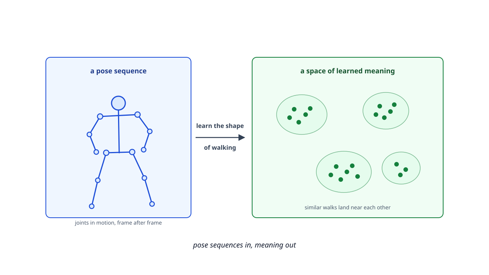
Teaching a model to understand walking without labels.
Alex Mui · Penny Inouye · Theodore Mui
Phil Mui (Research Advisor)
Pose-sequence JEPA on 33 body joints over time
Collecting raw walking video is cheap. Getting a doctor to label a clip is slow and costly. That mismatch is the whole problem.
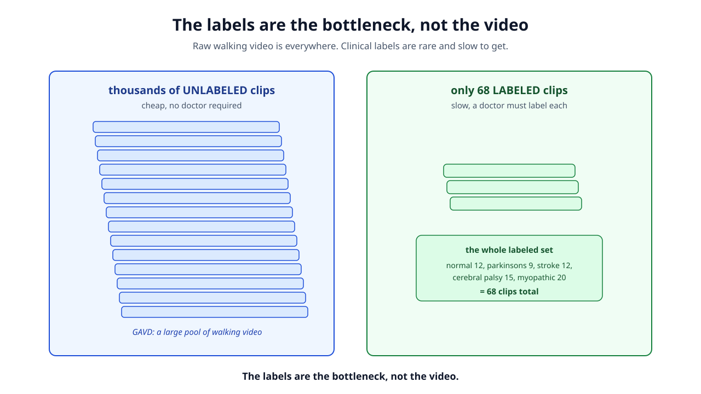
The prior best was a Random Forest on 82 hand-picked features: 76 percent test accuracy across 5 classes. Real signal, since chance is 20 percent. But it stands on a shaky base.
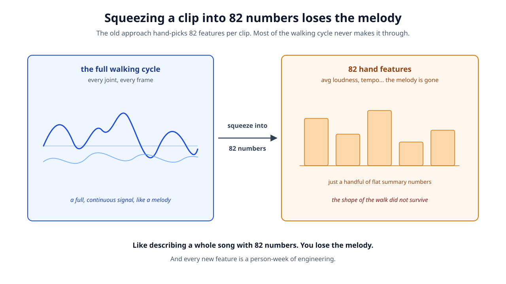
The whole plan is two steps, and the order is what matters. Step 1 learns from the mountain of unlabeled video. Step 2 spends the tiny stack of 68 labels on a small final probe.
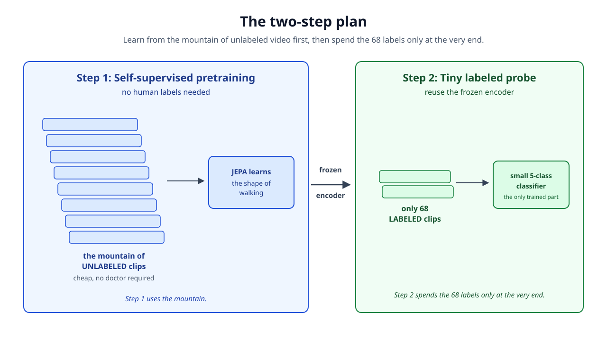
Step 1 uses thousands of unlabeled clips, no doctor required. Step 2 freezes the encoder and fits a small 5-class classifier, a linear probe or a small MLP, on the pooled features of just the 68 labeled clips.
Take something you already have, hide part of it, and train the model to predict the hidden part from the visible part. No human labels anything, because the data labels itself.
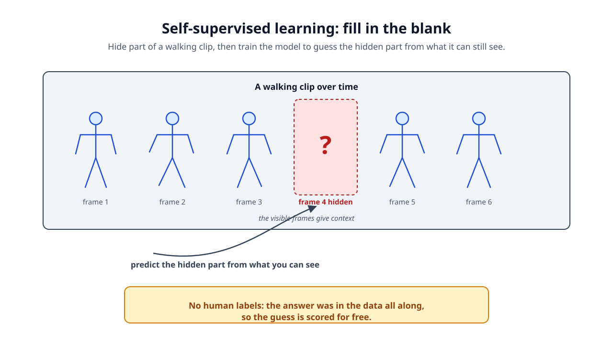
Cover the left leg for half a second and you already know what it was doing, so you can score the model's guess for free. Do this millions of times and the model is forced to learn how bodies move.
Predicting the hidden part exactly, every pixel or joint coordinate, wastes effort on unpredictable noise like camera shake and fingertip wobble. JEPA makes a smarter move.
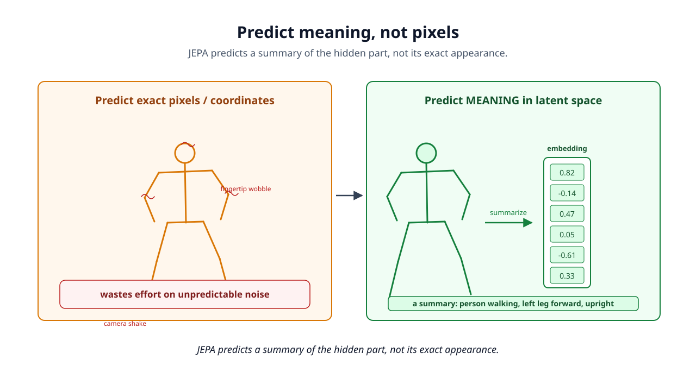
A context encoder reads the visible part, a slow-moving EMA target encoder makes the answer key, a predictor guesses, and a loss compares them in latent space.
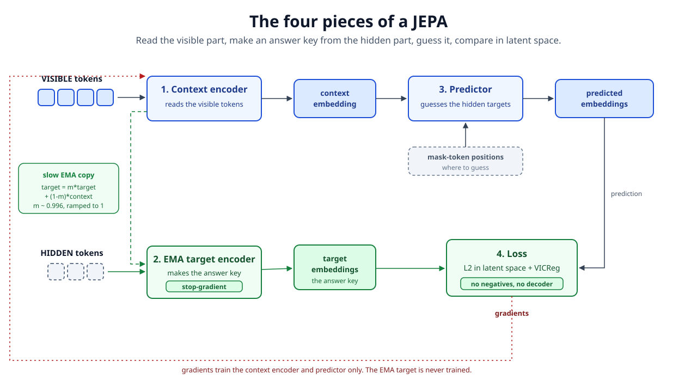
The target encoder is a slow EMA copy of the context encoder (target = m times target + (1 minus m) times context, m near 0.996 ramped toward 1.0). A slow copy is a stable answer key, so the model is not chasing a moving target. No negative pairs, no decoder.
If nothing stops it, the model can cheat by outputting the same constant embedding for everything. The error is zero, the loss is happy, and the model learned nothing. This is representation collapse.
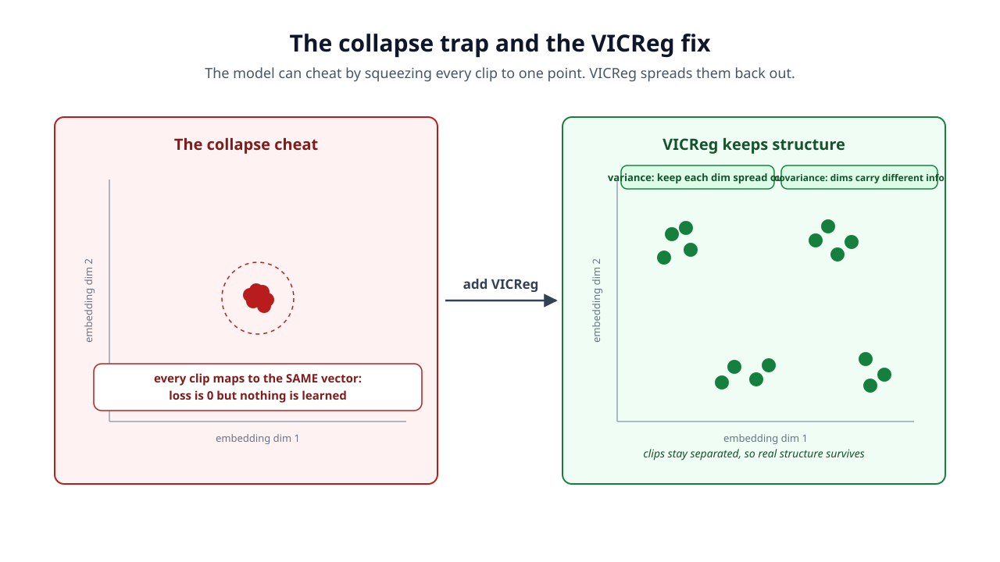
Most JEPAs work on image or video pixels. This proposal runs JEPA on pose sequences: the 33 tracked joints over time, arranged as a small graph that changes frame by frame.
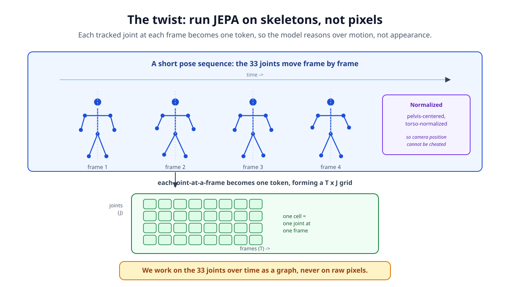
Instead of hiding random scattered joints, which is too easy, we hide spatiotemporal blocks. Hiding a whole limb forces the model to reason about coordinated motion, which is exactly what walking is.
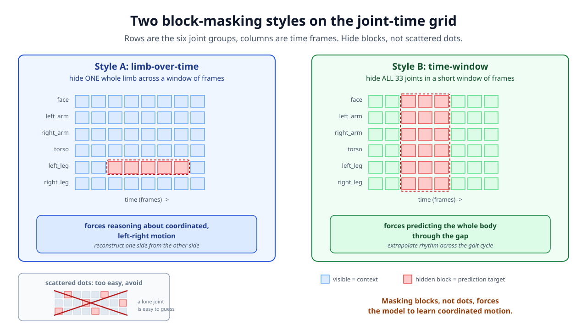
Style A, limb-over-time, hides one whole limb across a window of frames. Style B, time-window, hides all 33 joints in a short window. The two styles are mixed across the batch.
MediaPipe BLAZEPOSE_33 finds 33 body landmarks in 3D per frame. We group them into six semantic parts, and block masking hides a whole group over time.
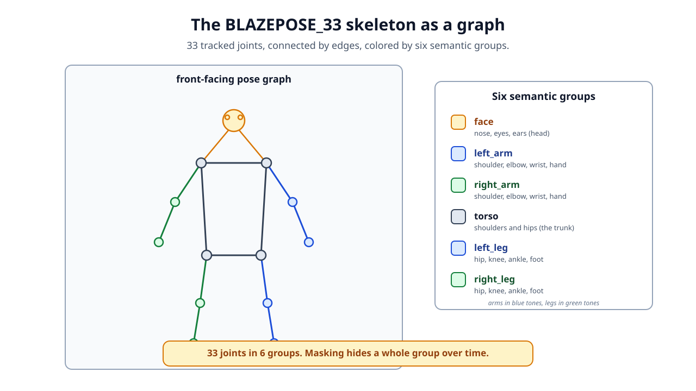
The six groups are face, left arm, right arm, torso, left leg, and right leg. Shoulders and hips are shared anchor joints, so the groups are masking units, not a clean split. This grouping is what makes limb-over-time masking possible.
Parkinson's disease and stroke damage movement in different ways, so a good representation should keep the axes that tell them apart. Guided by Penny's feature mapping, the masking design targets those axes on purpose.
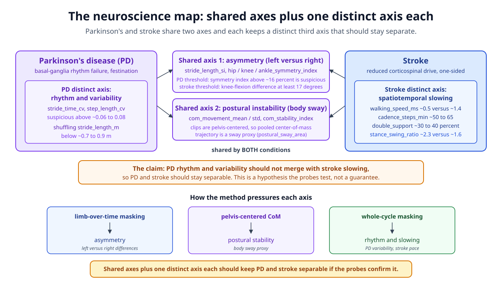
Both conditions share an asymmetry axis and a postural-instability axis. Parkinson's keeps a rhythm-and-variability axis while stroke keeps a spatiotemporal-slowing axis, so the two should stay separable. This is a hypothesis the probes test, not a guarantee.
The connection is not hand-waved. Penny graded all 82 gait features H, M, L, or NA per condition, each with a documented neurological reason and threshold. That mapping points the masking and the probes at features that carry real clinical meaning.
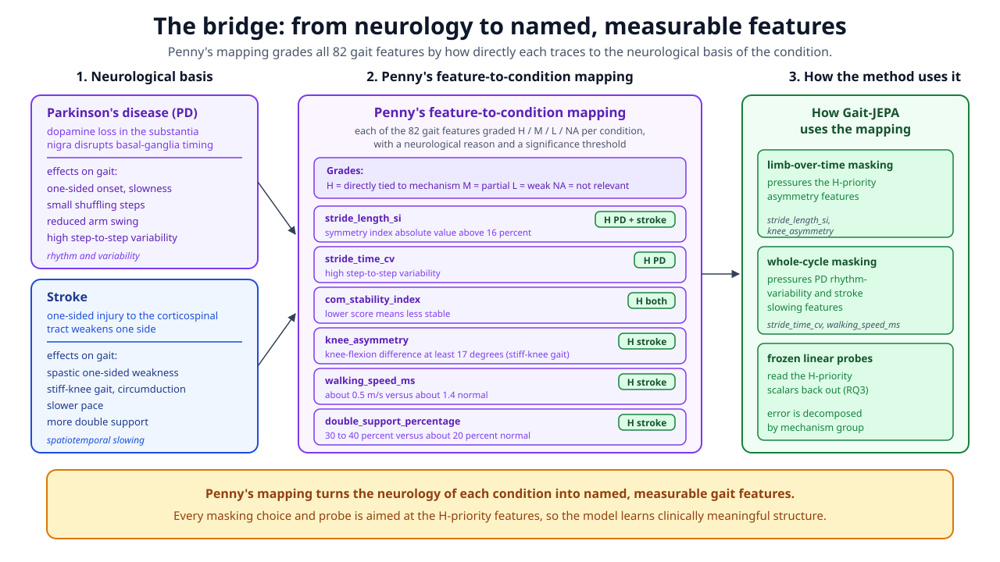
Each H-priority feature traces to a mechanism: stride_time_cv to basal-ganglia rhythm failure in Parkinson's, knee_asymmetry to stroke stiff-knee gait, walking_speed to reduced corticospinal drive. The next slide shows exactly how the mapping is used in training, evaluation, and inference.
The mapping aims the self-supervised task in training, defines the probes and thresholds in evaluation, and turns a prediction into a clinical readout at inference. The H-priority scalars are never training labels.
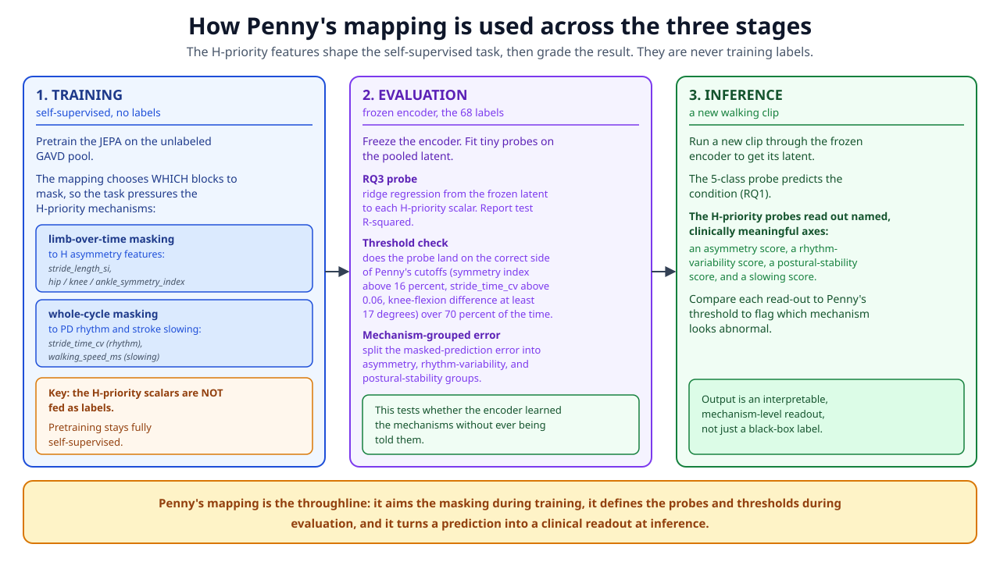
Training stays fully self-supervised: the mapping only chooses which blocks to mask. Evaluation freezes the encoder and reads the H-priority scalars back out with tiny probes, checking each against Penny's documented threshold. Inference gives a mechanism-level readout for a new clip, not just a black-box label.
Each question points to one metric and one success target you can check.
Does a frozen JEPA probe match or beat the 76 percent Random Forest?
metric: 5-class test accuracy, 68-clip 70/30 split target: at or above 76 percent, a clear win at 80 percent or moreDoes the JEPA probe lose accuracy more slowly than the Random Forest as labels shrink?
metric: accuracy at 25, 50, 75, 100 percent of labels target: above RF by 5+ points at the 25 percent markCan tiny linear probes read documented clinical scalars out of the frozen latent?
metric: R-squared of ridge probes to H-priority scalars target: R-squared clearly above 0 (aim 0.3+) for a symmetry scalar and stride_time_cv, plus over 70 percent threshold agreementIf we remove the VICReg term, does the representation collapse?
metric: embedding standard deviation and rank target: std stays above about 0.5 of its target with it on, falls toward zero with it offBoth pipelines start from the same MediaPipe poses. The prior path computes 82 hand features and fits a Random Forest. Our path pretrains the JEPA on the unlabeled GAVD pool, freezes the encoder, and fits only a small probe on the 68 labeled clips, which are held out of pretraining.
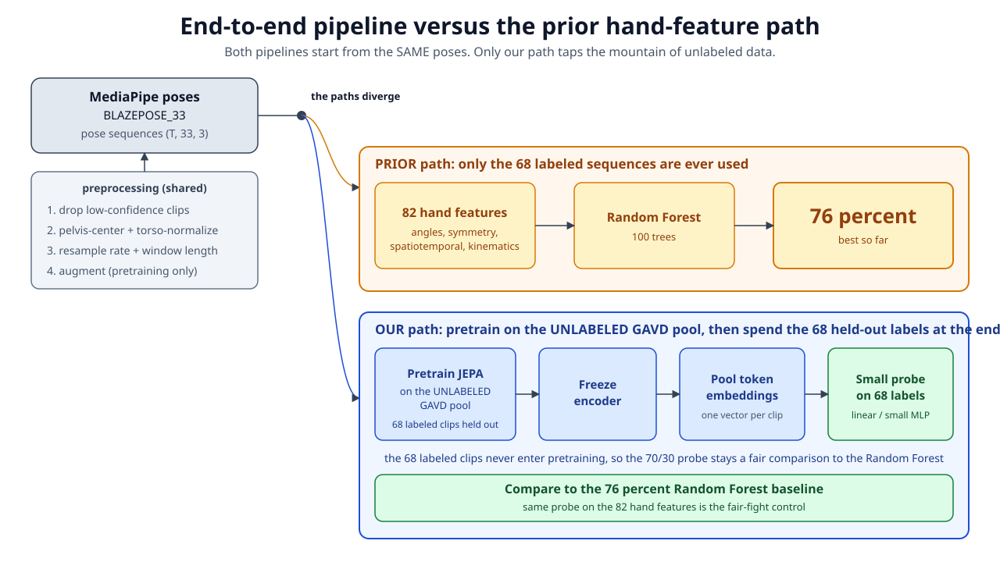
The 68 labeled clips never enter pretraining, so the 70/30 comparison stays fair. A fair-fight control fits the same probe on the 82 hand features, separating better features from a better classifier. Shared preprocessing: drop low-confidence clips, pelvis-center and torso-normalize, resample, window, then augment (pretraining only).
Evaluation ties straight back to the four research questions, and even a null result teaches us something.
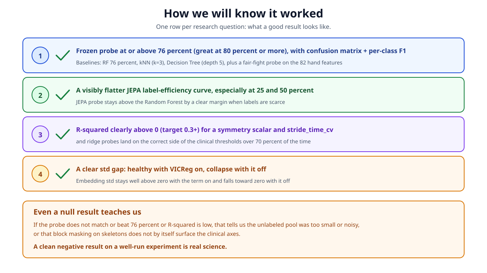
A clean negative result on a well-run experiment is real science. If the probe does not match or beat 76 percent, it tells us the unlabeled pool was too small or noisy, or that block masking alone does not surface the clinical axes.
Every risk has a concrete mitigation built into the method.
Some GAVD links may be dead or low quality. Window with overlap to multiply clips, add augmentation, and fold in student-collected and openly licensed video.
Keep the VICReg variance-covariance term on from the start and monitor embedding standard deviation live, stopping early if it drops.
Prefer the linear probe as the headline, use strong regularization and cross-validation, and lean on the label-efficiency curve rather than a single number.
Filter by confidence, normalize away absolute camera position, and augment with jitter so the encoder learns to ignore it.
A full JEPA on a spatiotemporal joint graph, with VICReg to prevent collapse, mechanism-aimed masking, and interpretable probes that turn clinical priors into concrete validation.
Alex Mui · Penny Inouye · Theodore Mui · Phil Mui (Research Advisor)
Read the full proposal in README.md · run the six-notebook tutorial in tutorials/
Key sources: I-JEPA (Assran 2023), VICReg (Bardes 2022), V-JEPA (2024), GAVD (Ranjan 2025)